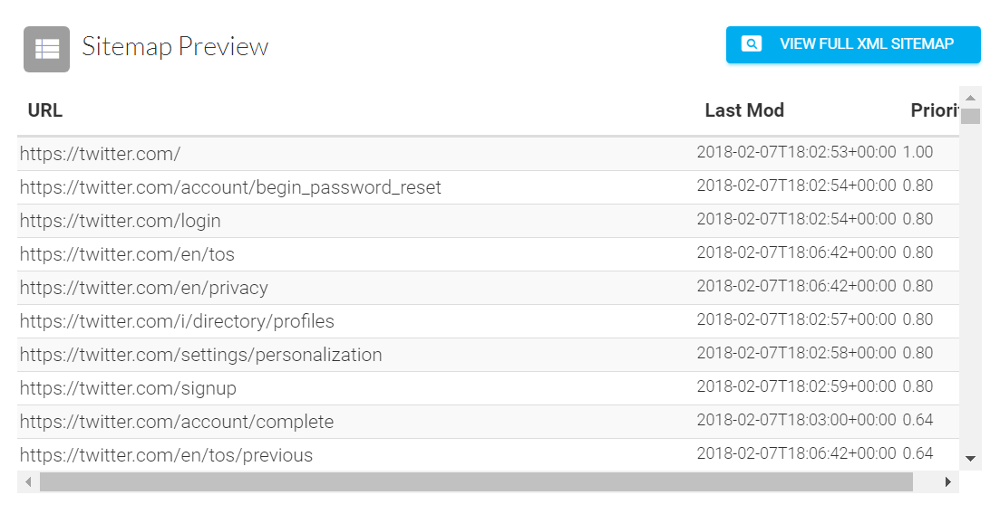

User navigation is a way of allowing the user to explore different pages through a website. This provides an easy interface for any user to navigate a website.
This is Twitter's current navigation bar. The navigation bar shows the most important links for any user using the website for its intended purpose. Navigation is a much simpler UI than a whole site map as it contains the most relevant links for users.
A site map is a list of all pages and links of a website. It also provides a hierarchy of the content. This allows search engines to locate any pages that are useful to searches much more easily.
This is a snipet of Twitter's current site map (view the whole site map). Site maps are not usually useful to regular users (especially for Twitter) since regular users will only need the important pages relevant to them. This is where navigation bars come more in handy.